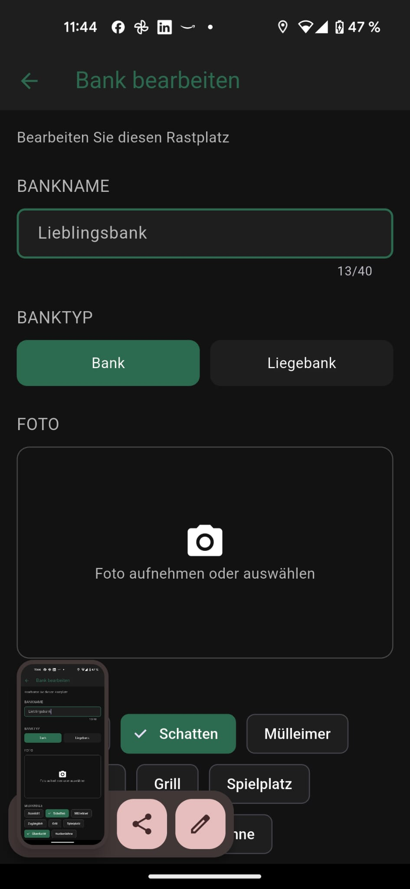
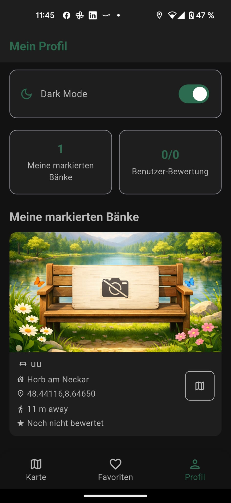

Entdecken
Finde Bänke und Sitzplätze auf einer übersichtlichen Karte.
GreenSeat zeigt dir Bänke, Lieblingsorte und neue Spots in einer klaren Oberfläche. Die App bleibt schlank: nur eine anonymisierte Nutzer-ID, keine eigenen Tracker.
Die wichtigsten Funktionen sind sofort sichtbar, damit Besucherinnen und Besucher die App in wenigen Sekunden verstehen.
Finde Bänke und Sitzplätze auf einer übersichtlichen Karte.
Merke dir Lieblingsorte und rufe sie später sofort wieder auf.
Füge neue Plätze hinzu und hilf anderen, bessere Orte zu finden.
GreenSeat nutzt nur eine anonymisierte Nutzer-ID und keine eigenen Tracker.
Die Screens zeigen die wichtigsten Bereiche der App in einem klaren, modernen Look.
Alle Spots auf einen Blick.

Lieblingsplätze immer griffbereit.

Spots direkt an die Community weitergeben.

Alles Wichtige übersichtlich an einem Ort.
GreenSeat führt dich mit wenigen Schritten zu schönen Plätzen draußen. Die Bedienung ist bewusst einfach gehalten, damit die App schnell, verständlich und angenehm bleibt.
Öffne die Karte und sieh sofort, wo sich passende Plätze befinden.
Speichere Orte, die dir gefallen, und finde sie später wieder.
Ergänze neue Bänke und mache die Karte für alle besser.
GreenSeat speichert keine personenbezogenen Daten. Falls die App eine Identifikation benötigt, wird nur eine anonymisierte Nutzer-ID verwendet. Eigene Analyse-, Marketing- oder Tracking-Dienste werden nicht eingesetzt.
Auf dieser Seite findest du alle Infos zur App, die Screens und die vollständige Datenschutzerklärung an einem Ort.
Bis dahin findest du hier die wichtigsten Informationen und den Datenschutz.